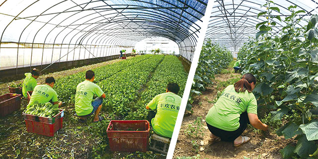
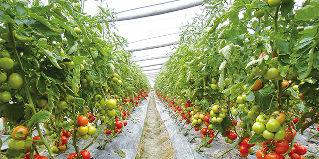
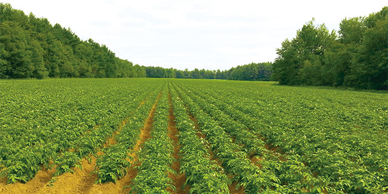

公司简介
丰欢农业从提高产品品质，提升服务价值出发，在金山，奉贤两地建立1200亩种植基地，从基地水源，空气，土壤，选种，田间管理，采摘，运输，入库，仓储，出库，配送全程严格把关，从食材的源头进行管控。确保食品安全，并通过减少流通环节降低销售价格。为客户提供高品质的一级货源的农业科技有限公司。
丰欢农业是集农业种植，生鲜配送，净菜加工为一体的新型公司；专注于为政府机关，企业，学校，星级酒店，中西餐厅，餐饮单位等提供农产品及副食品配送上门的服务。
目前丰欢的服务客户共有30多家，业务深入到行政机关，事业单位，企业，酒店等各行各业。每天稳定可供应蔬菜，水果，肉类，禽类，冻品，水产，粮油，干货，调料，豆制品等近千个品种。

我们的目标
为客户提供绿色，安全，营养，优质的农产品。
为客户提供方便快捷，实惠价优的配送服务。
让价格公开，让服务透明，让客户放心。

使命
成为客户最值得信赖的供应商
愿景
做安全农产品，让丰欢服务大众
定位
种植、加工、配送一体化
理念
诚信、服务、责任、互惠
精神
脚踏实地、精益求精
宗旨
恪守诚信、争创品牌
企业规划
丰欢农业以农产品配送，农场种植为中心发展，逐步向净菜加工，餐饮服务扩展业务，不断加强市场渗透。
- 明确细化职责，规范管理，提高营销职能管理专业化，定期进行客户梳理和客户满意度调査。
- 建立健全的职能部门管理制度与流程，并实施激励方案，完善考核管理，以支持战略工作的完成。
- 定时学习服务规范，提升服务人员整体素质，培养员工乐于服务、主动服务的心态。
